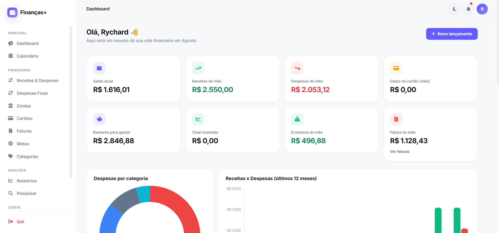

Finanças+
Projeto próprio · Em produçãoProblema
Controle financeiro pessoal costuma ficar espalhado entre planilhas soltas e apps que não mostram parcelamento de cartão, faturas futuras e metas em um único lugar.
O que resolve
- Dashboard com saldo, receitas, despesas e sobra do mês em tempo real
- Geração automática de parcelas de cartão e faturas mensais
- Contas, cartões, categorias e metas financeiras
- Relatórios e gráficos de despesas por categoria e histórico de 12 meses
Diferencial técnico
Arquitetura MVC construída do zero — Router, Auth, Validator, Session e CSRF próprios — decisão deliberada para rodar em qualquer hospedagem compartilhada, sem depender de Node, Docker ou Composer. Senhas com bcrypt, queries 100% via prepared statements (PDO), sanitização contra XSS e rate limiting no login.
Ver projeto